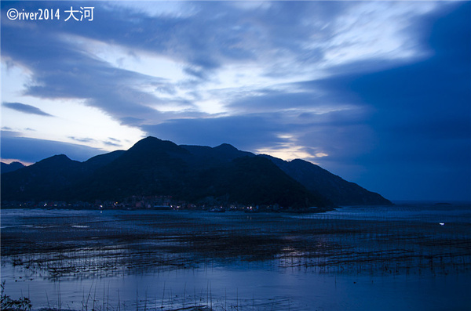
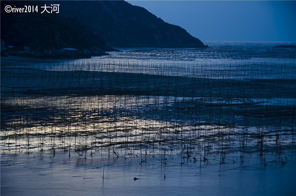
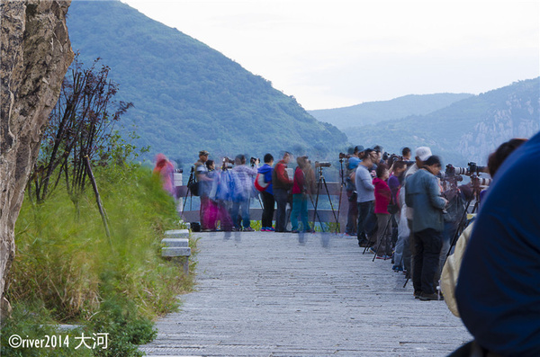
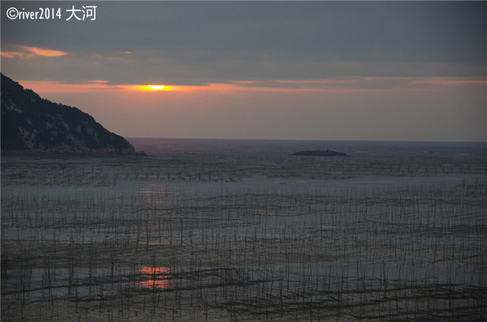
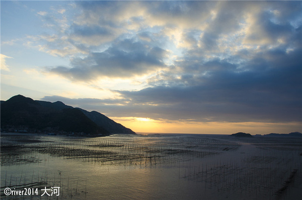
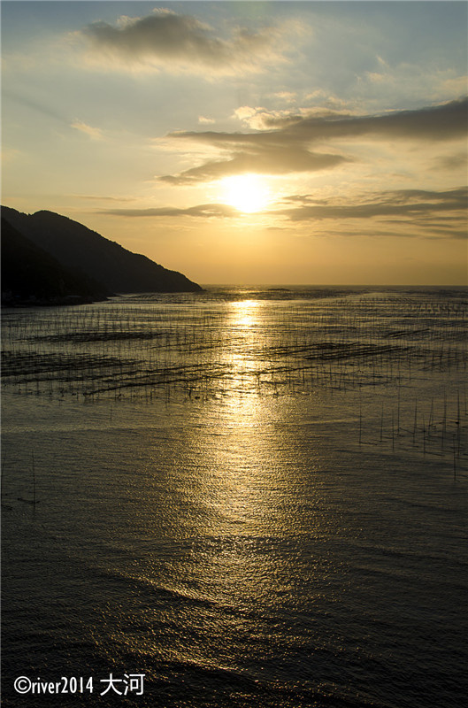
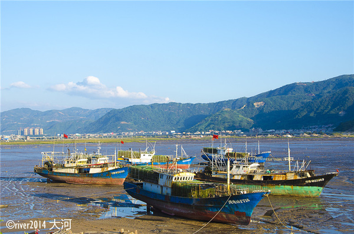

| Prefect Travrling | 首页 | 地区介绍 | 景区介绍 | ||||||||
|
|||||||||||
| 霞浦：北岐拍日出 |
| 2018-06-10 00:00 |
从县城开车到北岐村的摄影点，十几分钟就到了。摄影点位于村东头的小山坡上，为了禁止机动车入内，在门口修建了围栏。霞浦县为了发展摄影旅游，在许多摄影点都修建了平整的道路。 沿着海边的路上，就是摄影点，我们算是来的比较早的一批人，选好了位置，架起了三脚架，等待太阳升起。 霞浦的海边有许多竹竿架起的架子，主要是用来晒海带和紫菜，一片片的非常壮观。 十月上旬的霞浦早上有点冷，建议穿长袖衣服。摄影爱好者陆续到来，静静地等待。 海水还未涨潮，能看见山下海边的滩涂，被海水冲的一条条的层次分明，等太阳出来后也正是涨潮时间，滩涂就看不见了。 辛勤的渔民早已起床，在海中劳作，只是我们看不见。 天色渐渐亮了起来，摄影点站满了人群，长枪短炮早已准备妥当。 在这一群摄影爱好者中有一个摄影团，他们雇了一个渔民在海水中来回走动，不时做出捞紫菜的动作，有人的画面才不会显得单调。 抬头一看，太阳已经升起来了很高一节，今天的云层比较厚，挡住了初升的太阳。 阳光斜射在海面上，有了淡淡的霞光。 太阳继续升起，但是一直躲在云层后面不肯露面。 终于，海面上的霞光连成了一片，形成一条金黄色的光带。 不知是风还是阳光驱散了云层，天空开始变蓝。
整个海面上呈现出了波光粼粼的景象。 拍摄日出只有短短的十几分钟，太阳升起后阳光随即变强，不再适合拍照。 摄影团雇来的渔民依然在海水中不停的走动。 海水已经开始涨潮，水面上出现了一层层的波浪，非常漂亮。 整整齐齐的一排排架子横在海面上，照片不小心就拍成了黑白片。 初升的太阳，把一切都要染成金黄色。 中国美的滩涂，美的不仅仅是滩涂，更是劳作的渔民。 远处连绵的青山形成一个海湾，这里是天然的港口。 这几艘渔船是准备涨潮后出海捕鱼么？ 海边的小船很漂亮，明亮的黄色非常醒目。 当地的渔民经过一早的劳作，已经收获满满。早上两点多钟就起床，到海里捕捞蛏子，涨潮前必须回到岸边，辛苦程度可想而知。 刚刚捕捞的蛏子鲜活肥嫩，7元一斤。 【交通】 如果住在霞浦市区里，建议提前一天联系好第二天早上的车，只能包车前往。如果住在北岐村，则可以步行到观景台。 【门票】 免费开放。 |
|  |
|  |
|  |
|  |
|  |
|  |
|  |
| 上一篇:穿越千年的繁华，福建泉州超详攻略 |
PREFECT TRAVLING |
 |
地址：江苏省苏州市张家港市福新路1号 电话：13601475824 邮箱：130638633@qq.com QQ： 1370638633 |